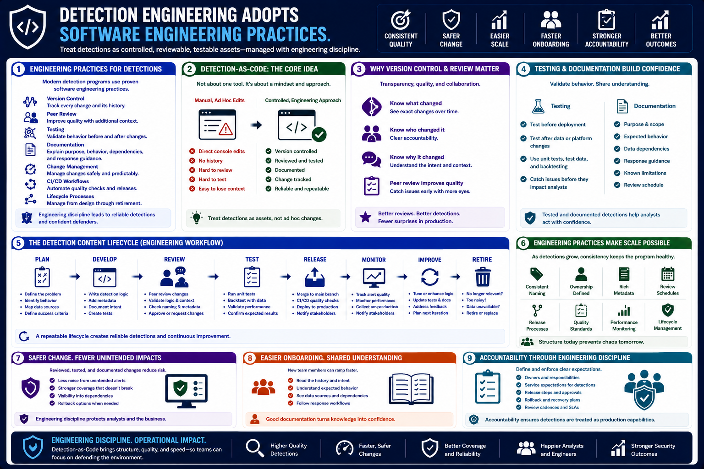

What Is Detection Engineering?
Detection Engineering as an Engineering Discipline
Connecting to LMS... Progress: in progress
Version 1.0 | Date: 2026-06-16 | Educational overview of defensive detection engineering concepts.

Narration
Detection engineering increasingly adopts software engineering practices. Teams use version control, peer review, testing, documentation, change management, CI/CD workflows, and lifecycle processes to manage detection content more consistently.
Detection-as-Code does not mean every organization needs the same toolchain. The core idea is that detections should be treated as controlled, reviewable, testable assets rather than informal edits made directly in a console.
Version control helps teams understand what changed, who changed it, and why. Peer review improves quality by bringing additional context before logic reaches production.
Testing helps teams validate detection behavior before deployment and after changes to data sources or platforms. Documentation helps analysts and engineers understand purpose, expected behavior, dependencies, and response guidance.
Engineering practices also make detection programs easier to scale. As the number of detections grows, teams need consistent naming, ownership, metadata, review schedules, and release processes to keep the program maintainable.
This approach supports safer change. When detection logic is reviewed, tested, and documented, teams are less likely to introduce avoidable noise, break existing coverage, or lose track of why a detection was created.
It also makes onboarding easier. New analysts and engineers can read the detection history, understand the intended behavior, and see how detections connect to telemetry sources and response workflows.
Engineering discipline also supports accountability. Teams can define owners, service expectations, release steps, rollback options, and review cadences so detection content is managed with the same care as other production capabilities.